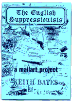
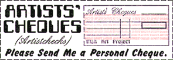

|
|
 |
In 1993, as a response to thoughts about the multifacetted nature of identity, I invited mailartists to explore 'Englishness' and join the English Suppressionists. I found fascinating insights into English nationality coming from home and abroad. Also pieces about the english language which is widely used in mail art circles. The First English Suppressionist Exhibition was held in Brighton. Two years later I decided to test the old mail art maxim, 'mail art and money do not mix'. The Artistcheques project became a touring exhibition in England and Holland, and each participant received an invaluable Artistchequebook as documentation. In 1996 Leanda Ryan and I asked mailartists to send some Cuttings for the Studio Floor. The studio floor is now covered with a varnished collage of the offcuts received. In 2000 I again decided to introduce a school connection to Mail Art with a project called Our Day Out, shown in February 2001 to coincide with the school play of the same name. In 2002 I invited mailartists to join the Abstract Realists, and in 2004 130 mailartists contributed to the Mailart Typeface. From 2006 to 2009, Leanda and I created the Cameraderie web gallery of mailartist photoportraits . |
|||||||||||||||
 |
|||||||||||||||||